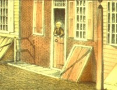

|
by Stefan Bielinski John W. Wendell was a hatmaker who came to Albany in the decade prior to the War for Independence. He was born about 1740 and was said to be a native of Boston. He also was called John Walter Wendell. In 1771, he married Albany native Mary Trotter and began to raise a family. The Trotters belonged to St. Peters and at least two of his children were baptized in the Albany Dutch church. Later, he would become a member and long-time trustee of the Albany Presbyterian Church. He also was an officer of the Albany Masonic Lodge. Settling near his in-laws, in 1772 he received title to a lot along Court Street and began to make hats. In 1774, he was appointed firemaster for the first ward. His career was pre-empted by the outbreak of war. In 1775, he was appointed Quartermaster for the Second New York Regiment of the Continental army. In August 1778, he was identified as an Assistant "Commissary of Forage" under the overall command of Morgan Lewis in Albany. In 1779, he was keeping the Continental stables in Albany. He also contributed financially to the American cause and later received a number of land bounty rights. With the end of the war, now middle-aged John W. Wendell began to advertize his "manufactured" beaver, "castor," and felt hats for sale in the Albany Gazette. His store a few doors south of city hall also sold drygoods. Expanding his holdings with adjoining lots, he opened a hat factory in partnership with William Trotter - his brother-in-law. Wendell's factory was a Court Street landmark and an outstanding local example of the emergence of American manufacturing. He later leased a water lot near the city "watering place." This "hat manufacturer" was one of the founding members and first president of the Albany Mechanics Society. In 1784, Wendell was elected to the city council as assistant alderman for the first ward. Active in committee work, he was re-elected several times. In 1788, he was among the Albany notables who signed a printed document voicing opposition to adoption of what became the United States Constitution. During the 1790s, he operated a hotel/tavern/boarding house on his Court Street complex. John W. Wendell died in February 1802. He lived to the age of sixty-two.
Detail from a larger watercolor by James Eights showing houses along Court Street. One of those versions has a character in a doorway we believe was John W. Wendell.
first posted: 7/31/01; last revised 10/20/10 |